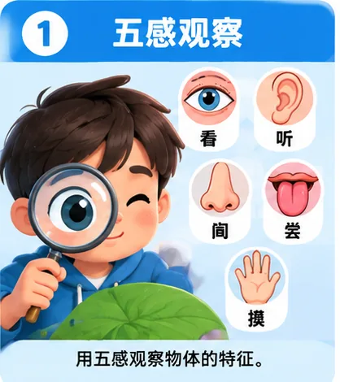
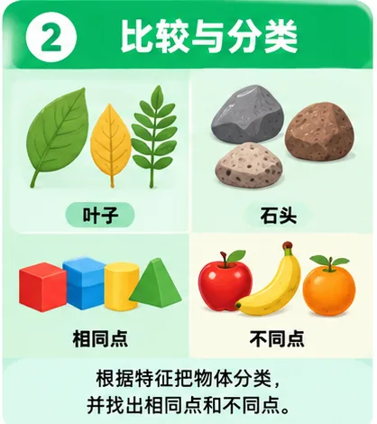
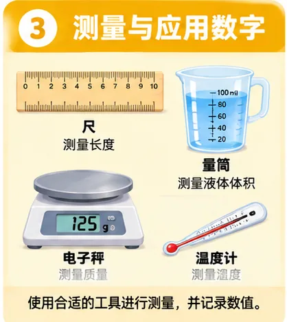
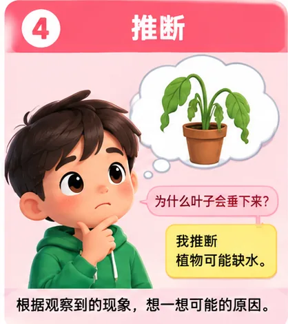
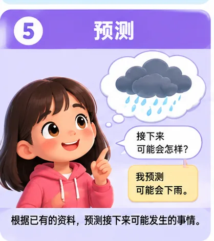
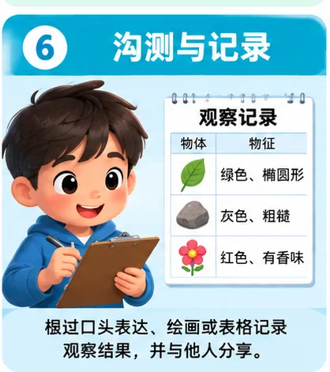
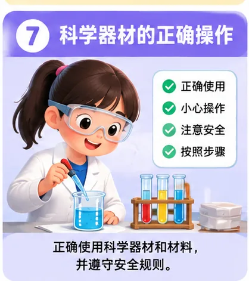
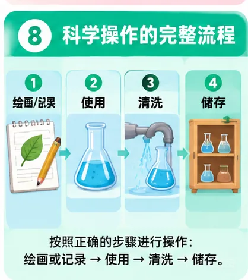

1. 五感观察
用眼睛、耳朵、鼻子、舌头和皮肤收集物体的特征和资料。
看到 / 听到 / 闻到 / 尝到 / 摸到 → 观察
下面 8 张图把这一单元的重要技能全部拆开。每一张图只负责一个概念，避免一页塞满文字，毕竟孩子不是来参加阅读耐力赛的。

用眼睛、耳朵、鼻子、舌头和皮肤收集物体的特征和资料。

先找相同点和不同点，再根据共同特征把物体分成不同组。

选择适合的测量工具，读取数值，并使用正确的标准单位记录结果。

已经观察到一个现象，再根据资料想一想它发生的可能原因。

根据已有资料，推测接下来可能发生的事情。

把观察结果通过口头表达、文字、绘画或表格记录，并与别人分享。

选择适合的科学器材和材料，依照正确步骤，小心处理标本并安全操作。

需要时绘画或记录，完成活动后清洗器材，再把器材和材料正确储存。